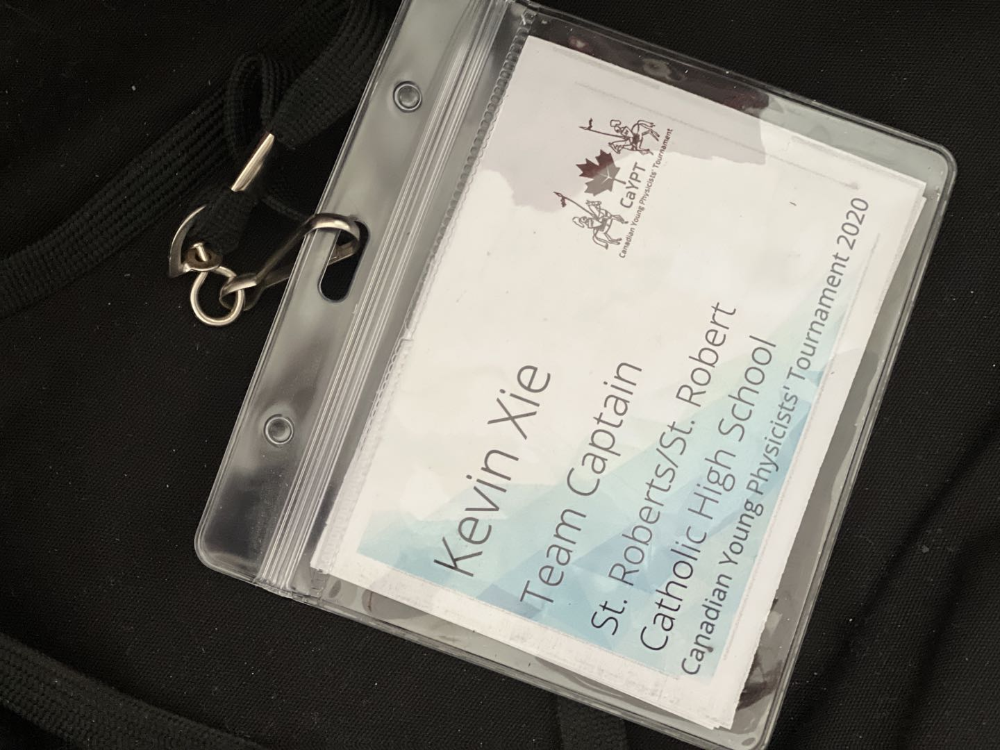

Project 1
| Experiment repro | |||
|---|---|---|---|
| Phenomenon | Theoretical Model | ||
| Fata Morgana is the name given to a particular form of mirage. A similar effect can be produced by shining a laser through a fluid with a refractive index gradient. | Snail's Lawn1sinθ = n2θ |
 | |
Project 2
| Launch base | Blades of 3 | Various degree of blades | Various # of blades | Samples | ||
|---|---|---|---|---|---|---|
| Phenomenon | ||||||
 |
||||||